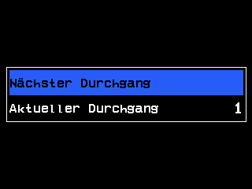

Fahrgasse auf dem Feld — Durchgangsanzeige und nächster Durchgang
Lesen Sie die Fahrgassenanzeige, wechseln Sie von Hand zum nächsten Durchgang oder lassen Sie das Panel es anhand der Spuranzeiger oder der Gerätestellung tun, und erkennen Sie eine für die Fahrgasse abgeschaltete Reihe.
Sobald „Fahrgasse“ auf „Ja“ steht (Den Fahrgassenrhythmus einstellen), zeigt der Startbildschirm die Fahrgassenanzeige: ein Symbol mit Reifenspuren und daneben oben den aktuellen Durchgang und, kleiner, darunter die Zahl der Durchgänge des Rhythmus. Sind im Profil Spuranzeiger enthalten, steht sie rechts von der Spuranzeigeranzeige.

| Symbol | Bedeutung |
|---|---|
| Grau | Das Panel wechselt von selbst zum nächsten Durchgang. |
| Gelb | Es tut das nicht: „Autom. Umschaltung“ ist aus, oder die Maschine liefert nichts, woran es umschalten könnte. |
| Gelb, im Wechsel mit einem Kreuz | Die Maschine könnte von selbst umschalten, aber „Autom. Umschaltung“ ist aus. |
Die Säulen der abgeschalteten Reihen sind hellgrau schraffiert; der Fluss darin wird weiter angezeigt, schraffiert: grün, solange er unter der Grenze bleibt, rot darüber — und dann meldet das Panel „Saat in Fahrgasse“. Die Grenze ist ein Anteil der Sollmenge, „Zul. Saat in Fahrgasse,%“ des Kornsensors (Sensoreinstellungen). Über einem Sensor, der nicht antwortet oder aus der Überwachung genommen ist, blinkt die Schraffur.
Den Durchgang von Hand ändern
Drücken Sie auf dem Startbildschirm „BACK“. Das Durchgangsmenü öffnet sich. Blinkt ein Mengenfeld, beendet das erste „BACK“ nur das Blinken; im Sensoreinstellmodus verlässt „BACK“ stattdessen den Modus.

Das Durchgangsmenü. Um einen Durchgang einzustellen, wählen Sie „Aktueller Durchgang“ und ändern Sie ihn mit „PLUS“ / „MINUS“, von 1 bis zur Zahl der Durchgänge. Er wird übernommen, wenn sich das Menü schließt.
Um einen Durchgang weiterzuschalten, wählen Sie „Nächster Durchgang“ und drücken „MENU“. Das Menü schließt sich. Dieser Punkt ist nur da, wenn das Panel nicht von selbst umschalten kann.
Wo das Panel von selbst umschalten kann, bietet das Menü stattdessen „Autom. Umschaltung“: „MENU“ schaltet zwischen „Ja“ und „Nein“ um, piept und schließt das Menü.
Dafür ist keine höhere Zugriffsstufe nötig.
Wenn das Panel von selbst umschaltet
Es braucht etwas, das ihm sagt, dass ein Durchgang zu Ende ist:
| Maschine | Was einen Durchgang beendet |
|---|---|
| Mit Spuranzeigern | Ein Wechsel der Spuranzeigerstellung. Mindestens ein Spuranzeigersensor muss überwacht sein und antworten. |
| Ohne Spuranzeiger | Das Ausheben der Drillmaschine aus der Arbeit. Der Gerätestellungssensor muss überwacht sein und antworten. |
| Keins von beiden | Nichts — das Menü bietet „Nächster Durchgang“ statt „Autom. Umschaltung“. |
Außerdem muss „Autom. Umschaltung“ auf „Ja“ stehen, und der Durchgang muss wirklich gefahren worden sein: Solange die Maschine fährt (ohne Geschwindigkeitssensor: solange sie sät), ist das Umschalten gesperrt. Es wird freigegeben, wenn die Arbeit stoppt; der nächste Wechsel der Spuranzeiger — oder das nächste Ausheben — schaltet dann genau einen Durchgang weiter.
Der Aktuator selbst
Zwei Einstellungen eines Fahrgassen-Aktuators stehen in seinem Kontextmenü (Sensoreinstellungen), Stufe „Agronom“:
| Punkt | Werte |
|---|---|
| „Abschaltpos.“ | Die Stellung, in der er abschaltet: „Ausgefahren“ (Werkseinstellung) oder „Eingezogen“. |
| „Umschalt.“ | Wann er sich bewegt: „bei Aussaat“ (Werkseinstellung) oder „immer“. |
Zwei Alarme betreffen den Aktuator: „Undef.Zustand“ — er meldet beide Endlagen zugleich; „Blockiert“ — er erreicht die geforderte Stellung nicht. Siehe Fahrgassenalarme.
Ihre Maschine tut etwas, das diese Seite nicht beantwortet? Schreiben Sie an support@agriwelt.com — es antwortet ein Ingenieur.